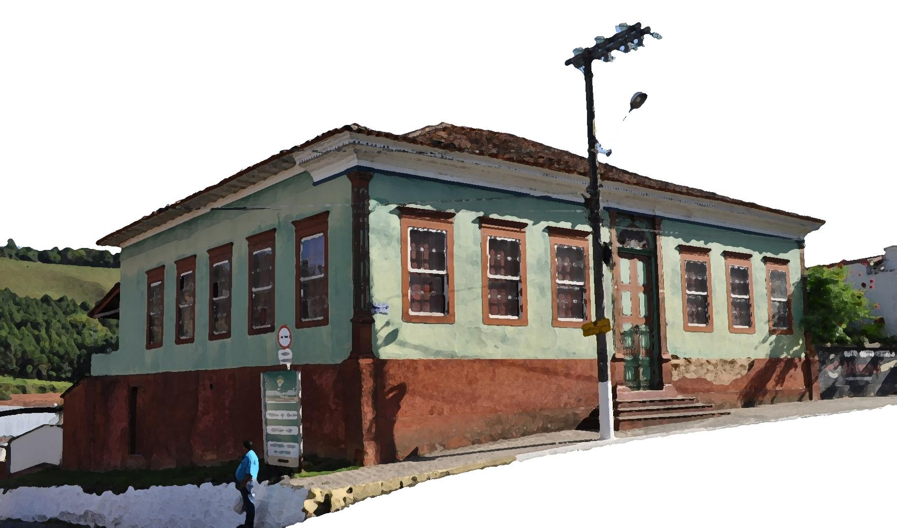

Processo de tombamento · Bem imóvel
Casarão de Dona Marina
Mansão dos Alves

Documento completo
58 páginas. Você também pode abrir o PDF em outra aba ou baixar o arquivo para consultar.
Abra o PDF para percorrer todas as páginas e ampliar o documento.
Ler as 58 páginasPDF original fornecido ao acervo, disponível na íntegra. A data apresentada é a de elaboração do documento.